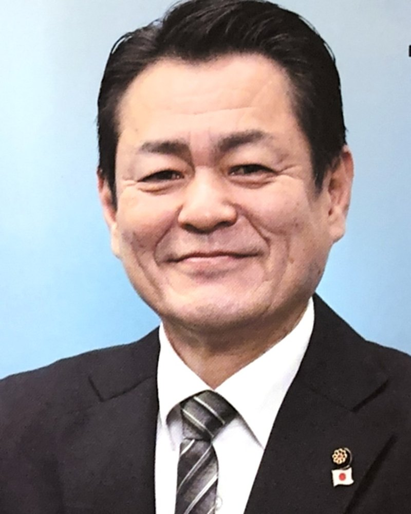

{{p.n}}
{{p.k}}
- {{i}}
羽曳野市議会議員
みなさんと一緒につくる
誰もが住みたい街づくりを！
前向きに歩んでいく、夢のある羽曳野市を。市民目線で、皆さまのご意見を議会に届けます。

確認待ち：写真はチラシから切り出した仮のものです。元の写真データをいただければ差し替えます。
メッセージ
市議会議員として5期18年の間、多くのご相談やご提言をいただいてきました。
その経験を生かし、何にでも賛成する議員ではなく、少しでも皆さんのご意見を市政に反映できるよう、必要な政策を提言し、訴えてまいります。
羽曳野市の未来のために、進めたいことがたくさんあります。前向きに歩んでいく夢のある羽曳野市を、みなさんと一緒につくるため、全力を尽くします。
羽曳野市議会議員 黒川みのる
確認待ち：チラシの言葉をもとに、読みやすく整えました。言い回しのご希望があれば直します。
政策
羽曳野市の未来のために、皆さんと一緒に進めたいことです。
{{p.n}}
他にも
建て替えにかかる建設費と設計を見直し、耐震に強く、使いやすい新庁舎への建て替えを提案します。
少子高齢化が進む中、地域のコミュニティセンターなどの公共施設をネットワークで結び、市民に近い、利用しやすい行政サービスを優先します。
確認待ち：2枚のチラシの政策を、6つにまとめました。くわしい数字（新庁舎の費用など）を載せるかどうか。
活動
{{a.v}}
確認待ち：活動の写真（チラシの写真は小さいため、元のデータをいただきたい。お子さんが写る写真は、顔が分からないものだけにします）。
SNS
LINEでは、ご意見やご相談も受け付けています。
確認待ち：Instagramのアドレス（チラシの表記「MINORU.H.N.S.R」から作りました）。
プロフィール
私は市民目線で、皆さまのご意見を議会に訴えていきます。
確認待ち：学歴・お仕事の経歴・地域での役（自治会など）・趣味など、ほかに載せたいこと。
市政へのご意見や、地域の困りごとを、このページからお送りいただけます。
いただいた内容は、黒川みのる本人が拝見します。お返事までに、数日いただくことがあります。
内容の種類
内容をご入力ください。
お名前をご入力ください。
お返事
ご連絡先をご入力ください。
お預かりした個人情報は、お返事のためだけに使います。
確認用のため、送った内容はどこにも届きません。本番では、事務所のメールなどに届くようにします（届け先は確認待ち）。
内容を拝見し、お返事をご希望の方には、順にご連絡します。
確認用のため、実際には送られていません。